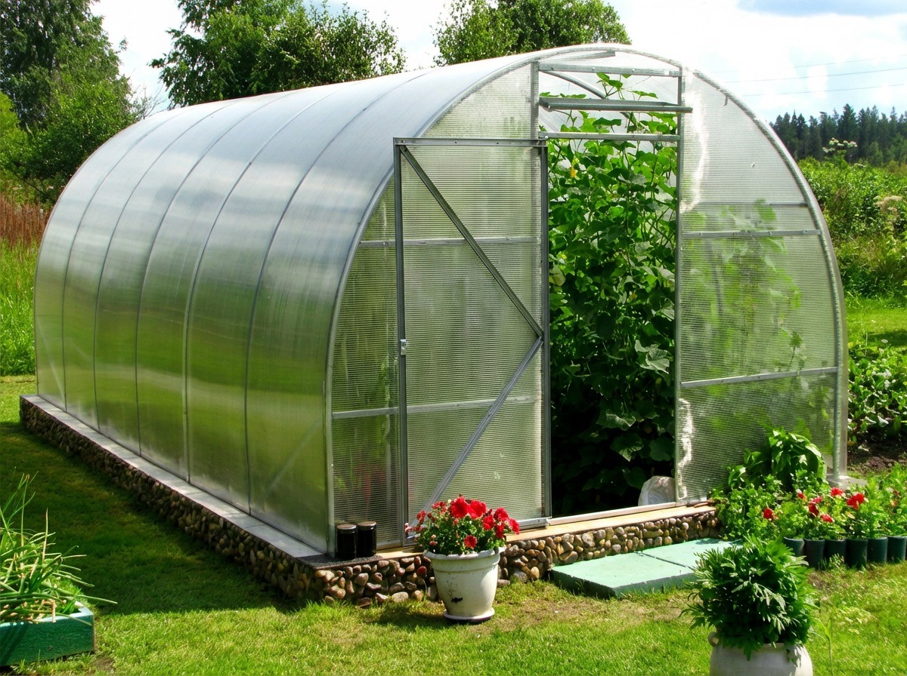

Базовая цена начинается с модели
На сайте уже есть три готовых варианта теплиц 3×6 м. Эконом стоит 16 900 ₽, Стандарт — 18 900 ₽, Люкс — 27 500 ₽. Это стартовая точка для расчёта, и именно от модели зависит, насколько жёсткий каркас вы получаете.
Что сильнее всего влияет на цену
- Тип профиля: 20×20, 25×25 или двойной профиль.
- Толщина поликарбоната: 4 мм или 6 мм.
- Нужна ли доставка на участок.
- Требуется ли монтаж под ключ.
- Есть ли особенности площадки и подъезда.
Если хотите детально понять разницу между профилями, посмотрите статью про каркас 20×20 и 25×25.
Как покрытие меняет итоговый бюджет
Даже при одинаковом каркасе цена меняется из-за поликарбоната. Листы 4 мм стоят 2 900 ₽, а 6 мм — 4 700 ₽. Поэтому одна и та же теплица может заметно отличаться по стоимости в зависимости от выбранного покрытия.
Когда есть смысл брать более дорогую модель
Если вы покупаете теплицу на несколько сезонов и хотите больше уверенности в каркасе, доплата за Стандарт или Люкс часто оправдана. Более жёсткий профиль и усиленная конструкция помогают избежать лишних расходов на ремонт и усиление позже.
Итог
Цена теплицы 3×6 всегда складывается из нескольких частей. Чтобы не переплатить и не ошибиться с выбором, лучше сначала определиться с задачей: нужен ли вам базовый вариант, более жёсткий каркас или максимальный запас по прочности. После этого уже проще выбрать модель в каталоге и уточнить итоговую стоимость через контакты.